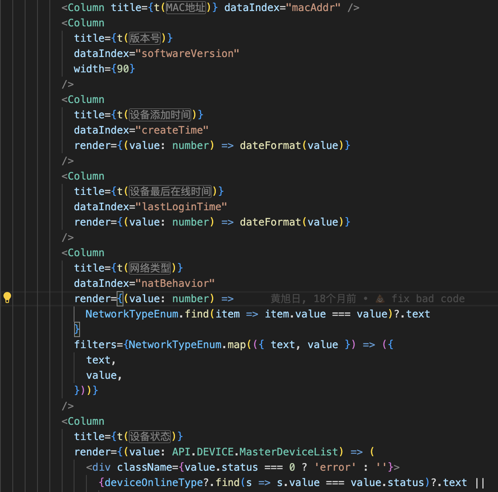

手写 i18n 代码
- 根据 url 标识来判断语言环境
- 获取对应的语言正则递归替换
- 返回翻译之后的内容
1
2
3
4
5
6
7
8
9
10
11
12
13
14
15
16
17
18
19
20
21
22
23
24
25
26
27
28
29
30
31
32
33
34
35
36
37
38
39
40
41
42
43
44
45
46
47
48
49
50
51
52
53
54
55
56
57
58
59
60
61
62
63
64
65
66
| import { useRouter } from "next/router";
import En from "@/locales/en";
import Zh from "@/locales/zh";
import { useCallback } from "react";
interface typeParams {
[key: string]: string | number;
}
interface ILanguageMap {
[key: string]: typeParams;
}
const LanguageMap: ILanguageMap = {
en: En,
zh: Zh,
};
const useTranslation: () => {
t: (key: string, params?: typeParams | (string | number)[]) => string;
isEn: boolean;
isZh: boolean;
} = () => {
const router = useRouter();
const jsonFun = useCallback(
(key: string, params?: typeParams | (string | number)[]) => {
let value = "";
if (LanguageMap[`${router.locale as "zh" | "en"}`]) {
value = LanguageMap[`${router.locale as "zh" | "en"}`][
`${key}`
] as string;
}
if (!key || !value) return key;
if (typeof value !== "string") return value;
if (params) {
Object.keys(params).forEach((item) => {
if (Array.isArray(params)) {
value = String(value).replace(
`{${item}}`,
String(params[Number(item)])
);
} else {
value = String(value).replace(
new RegExp(`{${item}}`, "g"),
String(params[`${item}`])
);
}
});
}
return value;
},
[router.locale]
);
return {
t: jsonFun,
isEn: router.locale === "en",
isZh: router.locale === "zh",
};
};
export default useTranslation;
|
vscode i18n-ally 插件配置
https://github.com/lokalise/i18n-ally/wiki/Configurations
由于手写的 i18n 只支持 js 或者 ts 引入翻译内容所以需要配置
1
2
|
"i18n-ally.enabledParsers": ["js", "ts", "pot"]
|
https://github.com/lokalise/i18n-ally/wiki/Locale-Formats
最后翻译效果如图
